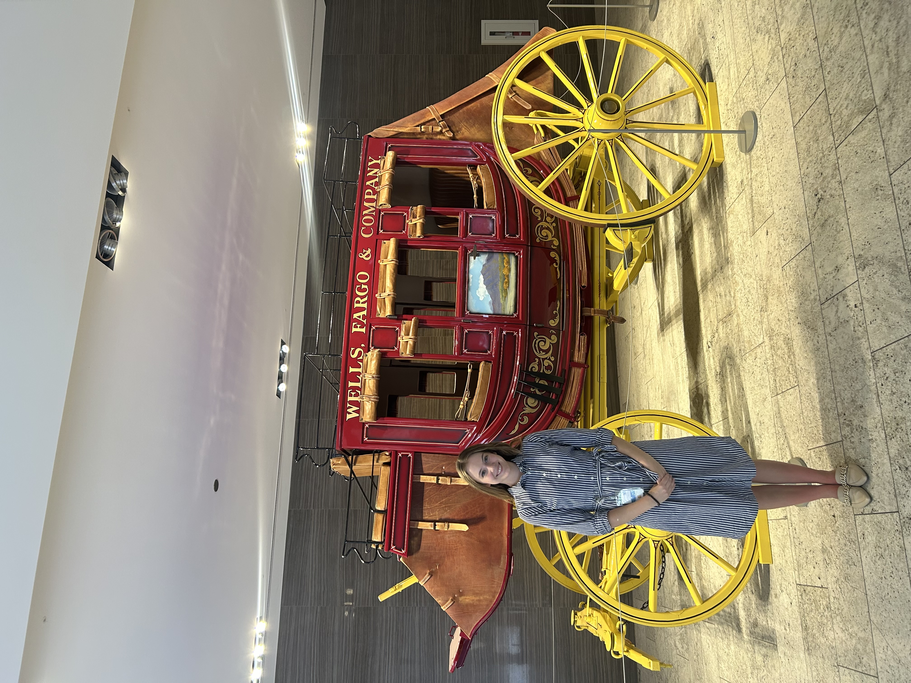
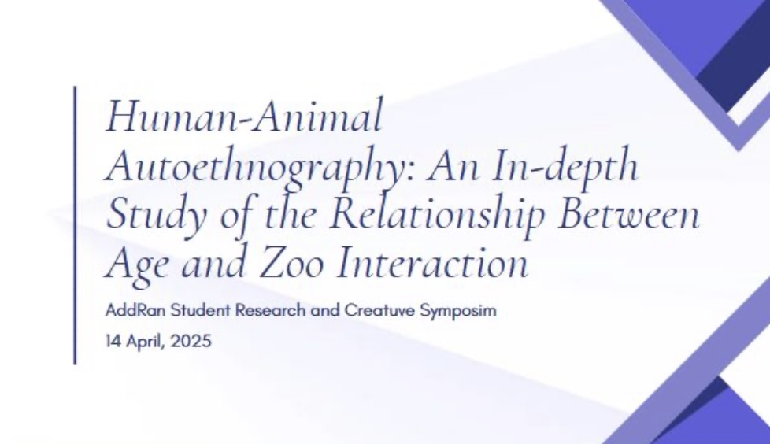
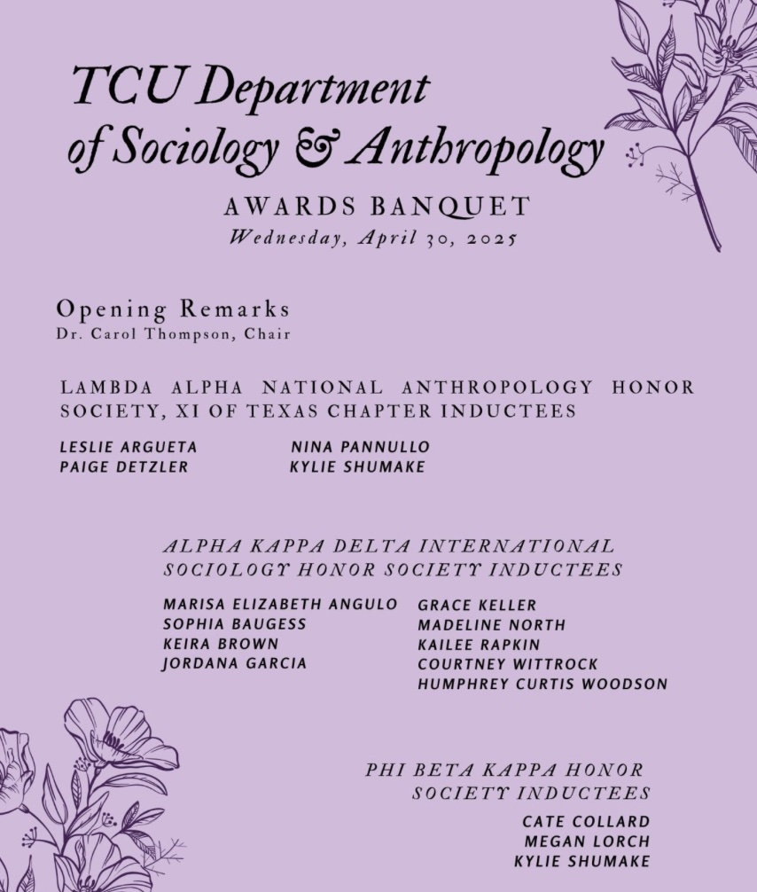

Class Website Project
This webpage is an example of a simple website I created using HTML and CSS for my class WRIT 40363.
Skills used: HTML, CSS, Flexbox
Sociology and Economics student
Eager to learn about how the world is socially constructed. Accomplishing this goal by investing her time in a liberal arts education.

When I am from is a little more complicated as my childhood was evenly split across three metroplexes: Dallas, Austin, and Houston. I have resorted to just telling people 'I am a Texas gal at heart' rather than specifying one hometown.
Having grown up in many contexts, I aspire to think about the world analytically and openly. Many of my passions are rooted in exploring different city cultures, different experiences, and learning where I fit in best.
Over the past three years, I have been fixated on maintaining a high GPA and having strong academic involvement. While my efforts have paid off in the long run, I want to choose classes and activities that are based on initial interest rather than the advice of outside resources or peers with my last few semesters. As for longer-term goals, I am looking to relocate to Charlotte, North Carolina for a banking job. In my first year as an analyst, I want to increase my communication skills and find my place within the bank.
Proficient in the use of the following platforms:
Nexidia, Banker Performance, Power BI, Tableau
Co-Director of AddRan Ambassadors; Phi Mu Epsilon Iota former executive member; Sociology Department Peer Advisor; John V. Roach Honors College Peer Mentor
Data collection; Data analysis; Project management; Client relations
Economic thought, social determinants of health, sociology of health
Online Fraud Detection Intern
Congressional Intern, Office of Congresswoman Kay Granger
Co-Director
Peer Advisor
Peer Mentor
Executive Member
Department of Sociology & Anthropology
ASRAC Conference Presenter
This webpage is an example of a simple website I created using HTML and CSS for my class WRIT 40363.
Skills used: HTML, CSS, Flexbox

As part of the Sociology Department's Introduction to Human-Animal Relationships class, I performed a study at the Fort Worth Zoo about the impact of age on zoo experiences. This research was then presented at the inaugural ASRAC conference hosted by the AddRan College of Liberal Arts.
Skills used: Research, data collection, ethnography, field study, design thinking

Each year The Department of Sociology & Anthropology selects one sociology student for giving their time to the field of sociology. I received this award after executing research in partnership with the Office of Student Success to conduct focus groups learning about the experiences of first-year and second-year college students.
Skills used: Focus groups, project proposal, academic advising, communication
I'd love to hear from you! Feel free to reach out through any of the following channels.